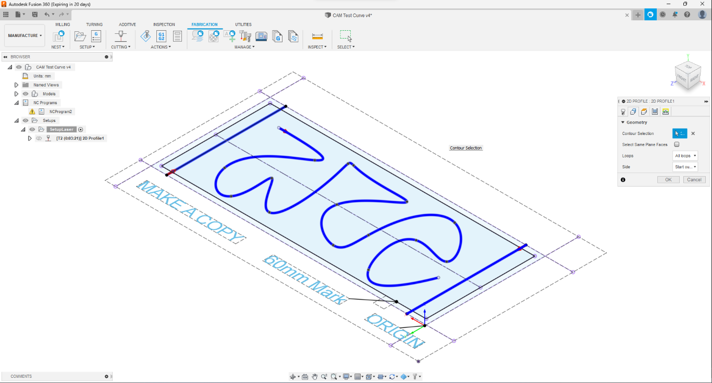
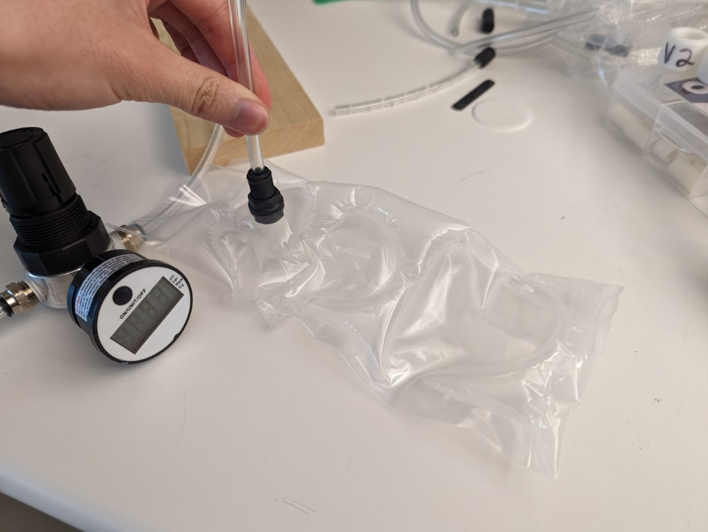

Research Projects
Sensored RC Car
August 2022 - Present
This semester I will be working with Professor Song Zhang again as part of the XYZT Lab. I will be working on a sensored RC car project alongside other undergraduate students and graduate student Yi-Hong.
CNC Heat Sealer
January 2022 - May 2022
During the Spring 2022 semester, I worked with Professor Laura Blumenschien as part of the RAAD Lab . During this semester I worked to develop a CNC heat sealer which to help the lab further its research and capabilities.
Project Overview
One of the RAAD lab's primary research areas is the development of flexible robotics such as vine robots. Advanced versions of these robots can create complicated shapes formed by heat sealing different materials to create air paths and pockets. The existing heat sealing equipment in the lab limited the possible seals to only straight lines and required lots of masking and manual labor to create different patterns. The CNC heat sealer allows the lab to create precise and repeatable patterns using computer software with the resulting patterns being far more complicated and detailed.
Personal Contributions
Over the course of the semester I began with researching similar projects from other groups, particularly efforts by the AeroMorph project from the MIT Media Lab. I tested two forms of possible heat sealing, modifying a soldering iron and adapting a 3D printer hot end, eventually settling on the 3D printer hot end due to its ease of use and integration. From this I sourced the components needed to build a first iteration using a 3018 CNC as the motion system and other electronic components. To keep the existing control board of the 3018, I used Fusion 360's post processor to generate GCODE to control the hotend and drive the system. A separate Arduino circuit was created to control and display the temperature of the hotend. The use of Fusion 360 also made it easy to create a template that allowed fast generation of custom patterns using the sketching feature. After testing the system, my final steps were creating a user guide as well as presenting and demoin0 the entire system to the entire lab.
Images
 Purdue AAMP-EM Task 13
January 2021 - December 2021
For this project, I worked with Professor Song Zhang as part of the XYZT Lab and the Purdue AAMP-EM Program. The specific task I was a part of focused on developing a closed loop system for FFM 3D printers, working with other undergraduate students and graduate student Caroline Blanchard.
Project Overview
As additive manufacturing (AM) grows more and more popular in modern manufacturing and prototyping, the need to develop methods to qualify printed parts grows. Although AM offers many advantages over traditional manufacturing, many techniques such as Fused Filament Fabrication (FFF) lack the reliability necessary for consistent and efficient production. These errors can result in the disposal of expensive parts hours into printing. Few systems currently analyze prints in real time and actively correct errors. As part of the AAMP program, Task #13 has focused on combining a commercial hobbyist printer and fringe projection 3D imaging system to build and test a platform for in-situ FFF analysis. This involved the development of a mechanical system to integrate the scanner and printer, as well as development of algorithms and software needed to process the incoming data and identify defects.
Personal Contributions
During my first semester, I focused on laying out the process required to run the entire system as well as better understanding the fringe projection technique used for scanning. That summer I then contributed to the mechanical integration of the scanner and commercial FFF printer. I also wrote a lot of the proof of concept Matlab code for processing the scanner data and comparing it to sliced GCODE. Throughout my time on the project I also added to knowledge library of common 3D printing issues and their corresponding solutions. My last semester I worked to create a proper calibration sequence for the scanner and printer and further increase the accuracy of the scans and computed differences. As part of the AAMP-EM program I also prepared a number of presentations and reports, including a research poster and technical paper.